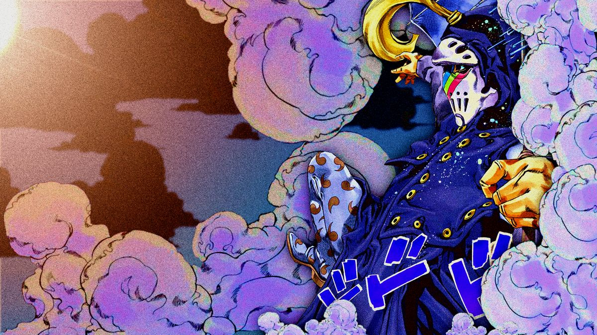

Catch the Rainbow
Conteúdo 1
Catch the Rainbow é o Stand possuído por Blackmore, um assassino leal ao presidente Funny Valentine na sétima parte de JoJo, Steel Ball Run. Blackmore adquiriu seu poder após uma longa e perigosa jornada. Ele passou cerca de um ano e meio vagando pelo deserto em busca do Devil's Palm (a "Palma do Diabo"), uma misteriosa formação rochosa que concede habilidades a quem a encontra. O Stand se manifesta como uma máscara com motivos de arco-íris. Sua habilidade principal é manipular a chuva. Ele pode congelar gotas no ar para usá-las como plataformas e caminhar sobre elas, transformá-las em lâminas cortantes ou até mesmo fundir seu corpo com a água para se teleportar ou fechar ferimentos. A grande limitação é que seu poder só funciona enquanto estiver chovendo. Blackmore é introduzido no arco "The Green Tomb" (aproximadamente no capítulo 36 do mangá), durante a corrida Steel Ball Run. Ele persegue Lucy Steel e os protagonistas, e sua batalha final acontece em uma noite de tempestade, terminando com sua morte quando a chuva para.
A aparição de Jesus
Durante a luta contra Blackmore acontece no clímax do arco "The Green Tomb". Lucy Steel estava sendo encurralada e carregava consigo as relíquias do Corpo Santo. Quando Blackmore finalmente a prendeu, prestes a matá-la para recuperar as partes sagradas, um milagre aconteceu. O poder divino das relíquias se manifestou em resposta ao perigo iminente. Foi assim que Jesus surgiu: materializando-se calmamente e caminhando sobre a chuva que o próprio Stand de Blackmore havia criado. Ele não veio para lutar, mas para proteger Lucy e as relíquias, agindo como uma barreira sagrada contra a ameaça. O motivo pelo qual Jesus apareceu foi justamente para impedir que Blackmore cumprisse seu objetivo. Ao ver a figura divina que tanto venerava, Blackmore não sentiu medo, mas sim um respeito tão profundo que o paralisou completamente. Ele não conseguiu atacar ou se defender, pois estava diante do milagre que confirmava sua fé. Foi nesse momento de distração e deslumbramento que Lucy, aproveitando a chance, sacou sua arma e atirou nele, o que levou à sua morte.